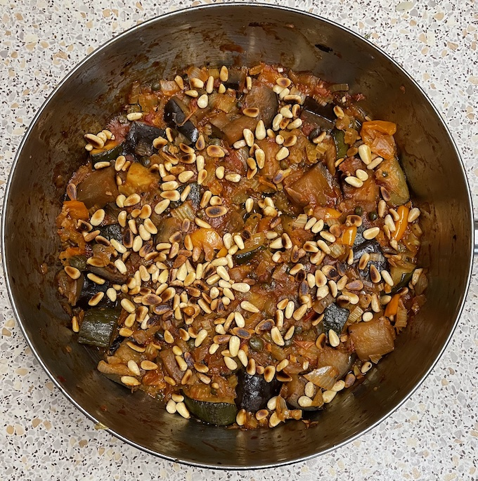

Caponata
Aubergine & corgette
- Fry or roast at 200°C until brown on all sides
- olive oil
- 1 large aubergine diced in 2cm pieces
- 1 corgette chopped
Stew
- Fry for 10 mins
- olive oil
- 2 large onions chopped
- 1 pepper chopped
- 6 sticks celery chopped
- Add for 2 mins
- Add and simmer for 15 mins with lid off
- 1 tin of tomatoes
- 75g capers rinsed
- ¼ tsp chilli flakes (if no fresh chilli)
- aubergine & corgette
- Add and simmer for 20 mins until all liquid evapourated
- 40ml red wine vinegar
- 25g sugar
- seasoning
- Scatter
Serving
- orzo, couscous
- 3 portions
Notes
- optional with tomatoes: 50g raisins (halve sugar), green olives, herbs, anchovies, artichokes
- add 2 fresh chillis with garlic instead of chilli flakes
- reduced vinegar from 75ml
- Original
recipe
